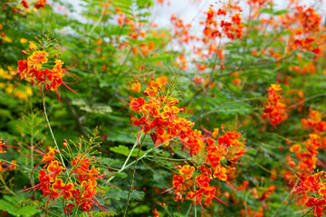

Flame of the Forest (Butea monosperma)
Scientific Name: Butea monosperma
Description: The Flame of the Forest, also known as Palash or Dhak, is a striking deciduous tree native to India and Southeast Asia. It is famous for its vibrant, flame-colored flowers that bloom in late winter and early spring, giving the tree a fiery appearance. The flowers attract birds and pollinators and are used in traditional Holi celebrations. Its leaves, bark, and flowers have significant cultural and ecological value.
Care Tips:
- Water: Requires moderate watering during the growing season. Once established, it is drought-tolerant.
- Light: Needs full sunlight to thrive. At least 6 hours of direct sun is ideal.
- Temperature: Grows well in tropical and subtropical climates. Tolerates high heat and dry conditions.
- Soil: Prefers well-draining sandy or loamy soil. Can tolerate poor soil conditions.
Medicinal Uses:
The Flame of the Forest has many uses in Ayurvedic and traditional medicine. The bark is known for its astringent and anti-inflammatory properties and is used to treat diarrhea, dysentery, and skin conditions. The flowers are used to make natural dyes and have detoxifying properties. The gum (known as Bengal Kino) is used in treating diabetes and ulcers. Seeds and leaves also have vermifuge and anti-parasitic uses. It is widely respected for its healing potential and cultural symbolism.